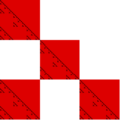
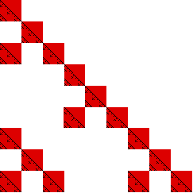

Box-Counting Dimension
Practice Problem 3 Answer
We can cover this fractal with 4 boxes of side 1/3. Self-similarity guarantees we need 16 boxes of side 1/9, and in general, 4
n
boxes of side 1/3
n
.


From this, we fill in the table
r
n
N(r
n
)
1/r
n
Log(1/r
n
)
Log(N(r
n
))
1
1
1
0
0
1/3
4
3
.477
.602
1/9
16
9
.954
1.204
1/27
64
27
1.431
1.806
1/81
256
81
1.908
2.408
1/243
1024
243
2.386
3.010
Here is the
log-log plot
.
Here we compute the
exact value
of the dimension.
Return to
Box-Counting Dimension Practice Problems
.